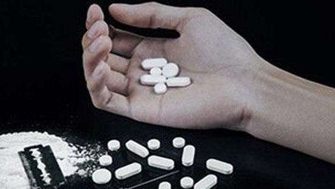

Bahaya Narkoba Bagi Remaja Dan Pelajar
Narkoba | 26 Februari 2019 | 12:00 WIB
Narkoba (singkatan dari Narkotika, Psikotropika dan Bahan Adiktif berbahaya lainnya) adalah bahan/zat yang jika dimasukan dalam tubuh manusia, baik secara oral/diminum, dihirup, maupun disuntikan, dapat mengubah pikiran, suasana hati atau perasaan, dan perilaku seseorang. Narkoba dapat menimbulkan ketergantungan (adiksi) fisik dan psikologis.
Penyalahgunaan narkotika dan obat-obatan terlarang di kalangan generasi muda dewasa ini kian meningkat Maraknya penyimpangan perilaku generasi muda tersebut, dapat membahayakan keberlangsungan hidup bangsa ini di kemudian hari. Karena pemuda sebagai generasi yang diharapkan menjadi penerus bangsa, semakin hari semakin rapuh digerogoti zat-zat adiktif penghancur syaraf. Sehingga pemuda tersebut tidak dapat berpikir jernih. Akibatnya, generasi harapan bangsa yang tangguh dan cerdas hanya akan tinggal kenangan.Sasaran dari penyebaran narkoba ini adalah kaum muda atau remaja. Kalau dirata-ratakan, usia sasaran narkoba ini adalah usia pelajar, yaitu berkisar umur 11 sampai 24 tahun. Hal tersebut mengindikasikan bahwa bahaya narkoba sewaktu-waktu dapat mengincar anak didik kita kapan saja.
Narkoba adalah singkatan dari narkotika dan obat-obatan terlarang. Sementara nafza merupakan singkatan dari narkotika, alkohol, dan zat adiktif lainnya (obat-obat terlarang, berbahaya yang mengakibatkan seseorang mempunyai ketergantungan terhadap obat-obat tersebut). Kedua istilah tersebut sering digunakan untuk istilah yang sama, meskipun istilah nafza lebih luas lingkupnya. Narkotika berasal dari tiga jenis tanaman, yaitu (1) candu, (2) ganja, dan (3) koka. Ketergantungan obat dapat diartikan sebagai keadaan yang mendorong seseorang untuk mengonsumsi obat-obat terlarang secara berulang-ulang atau berkesinambungan. Apabila tidak melakukannya dia merasa ketagihan (sakau) yang mengakibatkan perasaan tidak nyaman bahkan perasaan sakit yang sangat pada tubuh (Yusuf, 2004: 34). Narkotika adalah zat atau obat yang berasal dari tanaman atau bukan tanaman, baik sintetis maupun semi sintetis yang dapat menyebabkan penurunan atau perubahan kesadaran, hilangnya rasa nyeri dan dapat menimbulkan ketergantungan (Undang-Undang No. 22 tahun 1997). Narkotika adalah zat atau obat yang berasal dari tanaman atau bukan tanaman, baik sintetis maupun semi sintetis yang dapat menyebabkan penurunan atau perubahan kesadaran, hilangnya rasa nyeri dan dapat menimbulkan ketergantungan (Undang-Undang No. 35 tahun 2009). Narkotika digolongkan menjadi tiga golongan sebagaimana tertuang dalam lampiran 1 undang-undang tersebut. Yang termasuk jenis narkotika adalah:
Tanaman papaver, opium mentah, opium masak (candu, jicing, jicingko), opium obat, morfina, kokaina, ekgonina, tanaman ganja, dan damar ganja.
Garam-garam dan turunan-turunan dari morfina dan kokaina, serta campuran-campuran dan sediaan-sediaan yang mengandung bahan tersebut di atas.
Psikotropika adalah zat atau obat, baik alamiah maupun sintetis bukan narkotika, yang berkhasiat psikoaktif melalui pengaruh selektif pada susunan saraf pusat yang menyebabkan perubahan pada aktivitas mental dan perilaku (Undang-Undang No. 5/1997). Terdapat empat golongan psikotropika menurut undang-undang tersebut, namun setelah diundangkannya UU No. 35 tahun 2009 tentang narkotika, maka psikotropika golongan I dan II dimasukkan ke dalam golongan narkotika. Dengan demikian saat ini apabila bicara masalah psikotropika hanya menyangkut psikotropika golongan III dan IV sesuai Undang-Undang No. 5/1997.